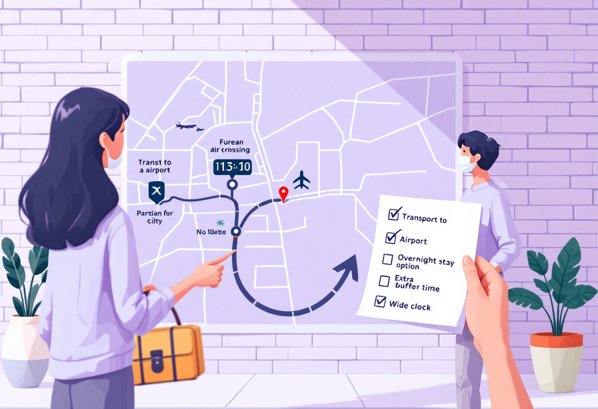
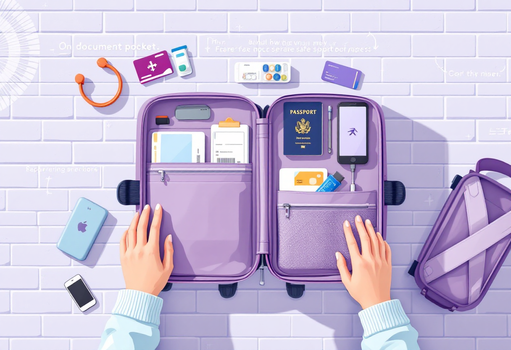
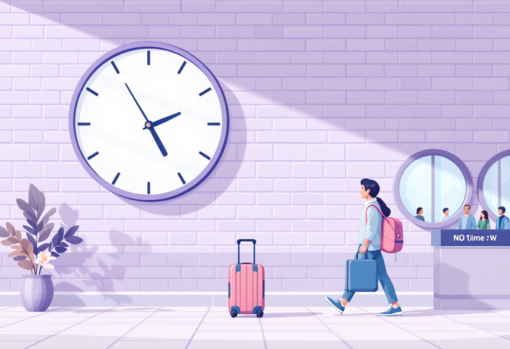
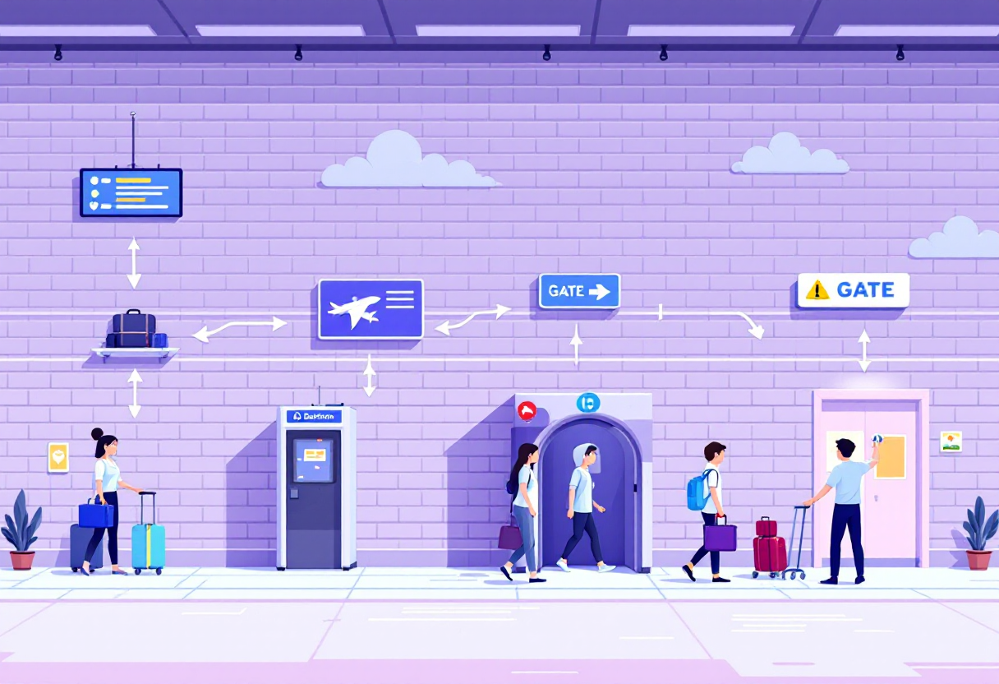

Перший раз в аеропорту
Покроковий гід по аеропорту: від входу до посадки на літак без стресу і плутанини.

Підготовка перед поїздкою в аеропорт
Більшість проблем в аеропорту виникає через поспіх або забуті документи. Готуйся заздалегідь.
- Зроби онлайн-реєстрацію за 24–48 годин до вильоту — на сайті авіакомпанії.
- Завантаж посадковий талон на телефон або роздрукуй.
- Перевір вимоги до ручної поклажі: розміри та вагу.
- Приїжджай мінімум за 2 години до внутрішнього рейсу, за 3 — до міжнародного.

Реєстрація та здача багажу
Якщо є зареєстрований багаж — підходь до стійки реєстрації своєї авіакомпанії.
- Знайди стійку за табло вильотів або навігаційними знаками.
- Пред'яви паспорт і посадковий талон.
- Здай багаж — отримаєш бирку з номером для відстеження.
- Якщо тільки ручна поклажа — йди одразу до контролю безпеки.

Контроль безпеки
Цей етап займає час. Будь готовий і не нервуй — все стандартно.
- Зніми пояс, годинник, монети — поклади у лоток.
- Дістань ноутбук і планшет із сумки — кладуть окремо.
- Рідини — до 100 мл кожна, у прозорому пакеті zip-lock.
- Рідини понад 100 мл забороняють — залиш вдома або здай у багаж.

Пошук гейту та посадка
Після контролю безпеки — знайди свій гейт і не відходь далеко за 40–50 хвилин до вильоту.
- Знайди номер гейту на посадковому талоні або табло.
- Стеж за оновленнями — гейт іноді змінюють.
- Посадка зазвичай починається за 30–45 хвилин до вильоту.
- Майся при собі паспорт і посадковий талон аж до входу у літак.